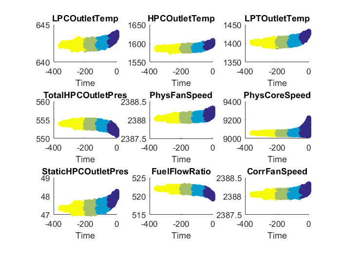
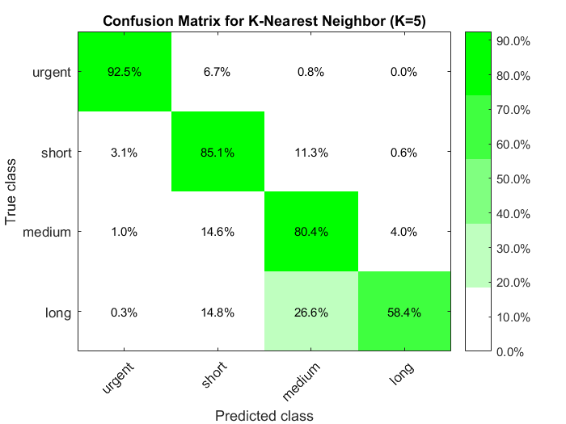
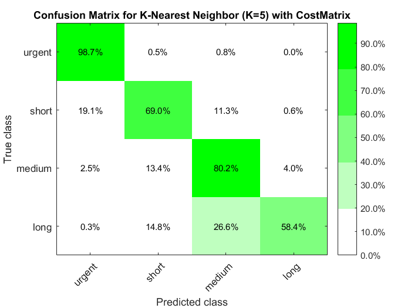

Data Analytics for Predictive Maintenance
We have a fleet of 100 aircraft engines of the same model. Each engine starts with different unknown degrees of initial wear and manufacturing variation which is considered normal. Each engine is operating at normal conditions at the beginning of the time series but degrades over time until a predefined, unknown failure threshold is reached. The objective is to predict from any point in time how long we have until we need to perform maintenance.
References:
- A. Saxena, K. Goebel, D. Simon, and N. Eklund, “Damage Propagation Modeling for Aircraft Engine Run-to-Failure Simulation”, in the Proceedings of the 1st International Conference on Prognostics and Health Management (PHM08), Denver CO, Oct 2008.
Contents
- Load data
- Define classification thresholds
- Visualize all sensor data in categories
- Rapid preparation for Machine Learning by leveraging App generated codes
- Create training and test sets
- Easy to develop, evaluate models by leveraging Apps, e.g., k-nearest neighbor
- Cost Matrix
- New model with K=5 and custom cost matrix
Load data
We explored importing, visualizing and preprocessing the data in the UnsupervisedScript, so here we will simply load in the data.
load classificationData
Define classification thresholds
To solve this as a classification problem, we need to define what the classes are and where the boundaries are between them. This typically is something you cannot do purely from the equipment sensor data. Here we drew arbitrary boundaries to create four different classes. We will attempt to classify each point as being urgently in need of maintenance, or having a short, medium, or long time until maintenance is needed.
catThreshold = [50,125,200];
orderedCategory = {'urgent','short','medium','long'};
fullDataset.TTF = createThresholds(fullDataset,catThreshold,orderedCategory);
% Look at spread of Classes
tabulate(fullDataset.TTF)
% Pull out just the sensor data
sensorData = fullDataset(:,3:end); % ignore Unit and Time variables
Value Count Percent
urgent 5000 24.71%
short 7499 37.07%
medium 5903 29.18%
long 1829 9.04%
Visualize all sensor data in categories
Here we look at a subset of the available sensors. The engines have been aligned so that they all fail at time zero and negative values represent flights prior to failure. We can see how the sensors change as they approach failure and where we have placed the different classes.
figure for ii = 1:9 h(ii) = subplot(3,3,ii); %#ok scatter(h(ii),fullDataset.Time,fullDataset{:,2+ii},[],fullDataset.TTF, 'filled'); title(h(ii),fullDataset.Properties.VariableNames{2+ii}) xlabel(h(ii),'Time') set(h(ii), 'CLim', [1 length(catThreshold)+1]) end
Rapid preparation for Machine Learning by leveraging App generated codes
One of the biggest challenges in machine learning is that there is no good way to know ahead of time what machine learning algorithm will work best until you try them out and see. The Classification Learner App from the Statistics and Machine Learning Toolbox makes greatly simplifies this workflow. We can explore many different techniques in the app, and in this case find that a K-nearest neighbors algorithm seems to work best.
% This command will bring up the app, or you can find it in the apps tab. % Use the sensorData variable when importing data from the workspace into % the Classification Learner App classificationLearner
Create training and test sets
The app will automatically create training and testing data sets when working within it. We can also create them ourselves when running outside the app.
predictorNames = fullDataset.Properties.VariableNames(3:end-1); predictors = fullDataset(:, predictorNames); response = fullDataset.TTF; % Set up partitions and holdout validation cvp = cvpartition(response, 'Holdout', 0.2); Xtrain = predictors(cvp.training,:); Ytrain = response(cvp.training,:); disp('Training set'); tabulate(Ytrain) % Test data Xtest = predictors(cvp.test,:); Ytest = response(cvp.test,:); disp('Test set'); tabulate(Ytest)
Training set
Value Count Percent
urgent 4000 24.71%
short 5999 37.07%
medium 4722 29.18%
long 1464 9.05%
Test set
Value Count Percent
urgent 1000 24.72%
short 1500 37.07%
medium 1181 29.19%
long 365 9.02%
Easy to develop, evaluate models by leveraging Apps, e.g., k-nearest neighbor
In our case, k-nearest neighbor outperforms other models based on confusion matrix. From the app we can auto-generate MATLAB code to train the model, which is copied here.
KNNClassifier = fitcknn(... Xtrain, ... Ytrain, ... 'Distance', 'Euclidean', ... 'Exponent', [], ... 'NumNeighbors', 5, ... 'DistanceWeight', 'Equal', ... 'Standardize', true, ... 'ClassNames', orderedCategory); % Predict Response using Predictors in Test dataset validationPredictions = predict(KNNClassifier, Xtest); validationPredictions = categorical(validationPredictions, orderedCategory,'Ordinal',true); % Visualize confusion matrix addpath(fullfile(pwd,'helperFunctions')) C_nn = confusionmat(Ytest,validationPredictions); C_np = fdispConfusion(C_nn, 'K-nearest neighbor (K=5)', orderedCategory); figure fheatmap(C_np, orderedCategory, orderedCategory, ... '%0.1f%%', ... 'TickAngle', 45, ... 'Colormap', 'money', ... 'Colorbar', true, ... 'ColorLevels', 5); title('Confusion Matrix for K-Nearest Neighbor (K=5)'); xlabel('Predicted class'); ylabel('True class');
Performance of model K-nearest neighbor (K=5):
Predicted urgent Predicted short Predicted medium Predicted long
Actual urgent 92.50% (925) 6.70% (67) 0.80% (8) 0.00% (0)
Actual short 3.07% (46) 85.07% (1276) 11.27% (169) 0.60% (9)
Actual medium 1.02% (12) 14.56% (172) 80.44% (950) 3.98% (47)
Actual long 0.27% (1) 14.79% (54) 26.58% (97) 58.36% (213)
 Cost Matrix
We can use a cost matrix to prioritize certain errors. For example the 'urgent' cases are the most important to capture, so we can penalize errors when the 'urgent' class is misclassified more than other types of errors. However, it is also wasteful to do maintenance well before it is needed, so we may add a smaller penalty to when we predict 'urgent' when it is acutally 'medium' or 'long'.
CostMatrix = ones(4) - eye(4);
CostMatrix(1,2:4) = 5;
CostMatrix(4,1) = 3;
CostMatrix(3,1) = 2;
disp('Cost Matrix:')
disp(CostMatrix)
Cost Matrix:
0 5 5 5
1 0 1 1
2 1 0 1
3 1 1 0
New model with K=5 and custom cost matrix
We can use cost matrix to prioritize certain errors. Now we are optimizing for the overall impact of our mistakes based on our cost matrix rather than just minimizing the raw number of mistakes. We can see that this greatly reduces the number of urgent cases that are not correctly captured, but also increases the number of short cases that are incorrectly classified as urgent. This may actually cause us to make a greater number of total mistakes, but if it concentrates those mistakes in areas where they are less costly to make then that is preferrable.
% New model with K=5 and custom cost matrix KNNClassifier5c = fitcknn(... Xtrain, ... Ytrain, ... 'Distance', 'Euclidean', ... 'Exponent', [], ... 'NumNeighbors', 5, ... 'DistanceWeight', 'Equal', ... 'Standardize', true, ... 'Cost',CostMatrix, ... 'ClassNames', orderedCategory); % Predict Response using Predictors in Test dataset [validationPredictions, validationScores] = predict(KNNClassifier5c, Xtest); validationPredictions = categorical(validationPredictions, orderedCategory,'Ordinal',true); % Visualize confusion matrix addpath(fullfile(pwd,'helperFunctions')) C_nn5c = confusionmat(Ytest,validationPredictions); C_np5c = fdispConfusion(C_nn5c, 'k-nearest neighbor (k=5) with CostMatrix', orderedCategory); figure fheatmap(C_np5c, orderedCategory, orderedCategory, ... '%0.1f%%', ... 'TickAngle', 45, ... 'Colormap', 'money', ... 'Colorbar', true, ... 'ColorLevels', 5); title('Confusion Matrix for K-Nearest Neighbor (K=5) with CostMatrix'); xlabel('Predicted class'); ylabel('True class');
Performance of model k-nearest neighbor (k=5) with CostMatrix:
Predicted urgent Predicted short Predicted medium Predicted long
Actual urgent 98.70% (987) 0.50% (5) 0.80% (8) 0.00% (0)
Actual short 19.13% (287) 69.00% (1035) 11.27% (169) 0.60% (9)
Actual medium 2.46% (29) 13.38% (158) 80.19% (947) 3.98% (47)
Actual long 0.27% (1) 14.79% (54) 26.58% (97) 58.36% (213)
